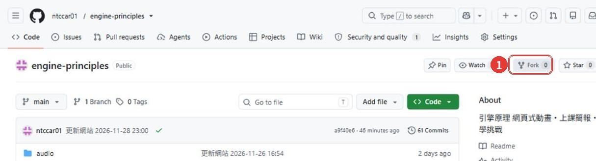
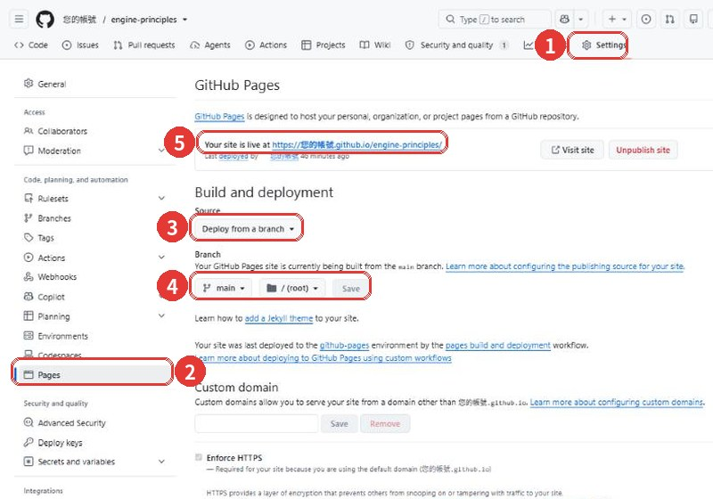
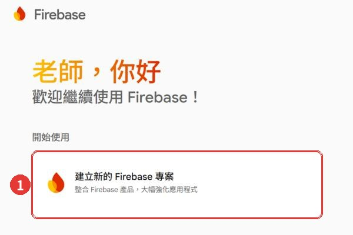
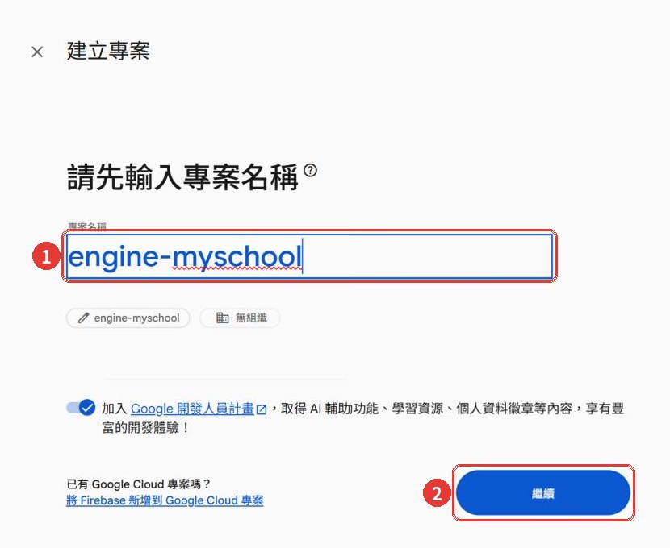
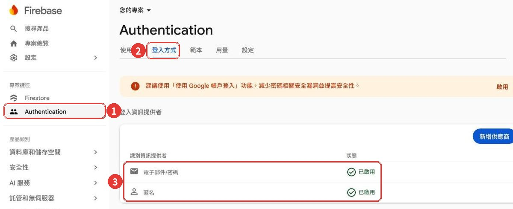
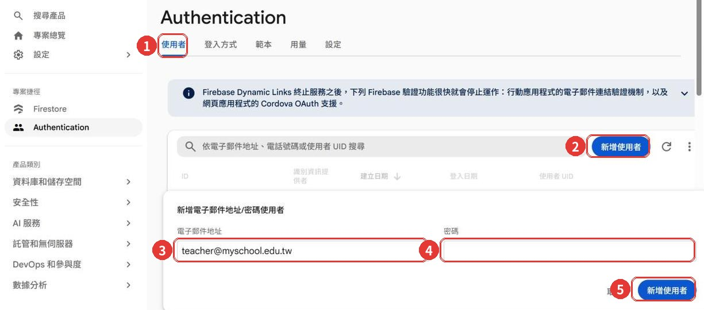
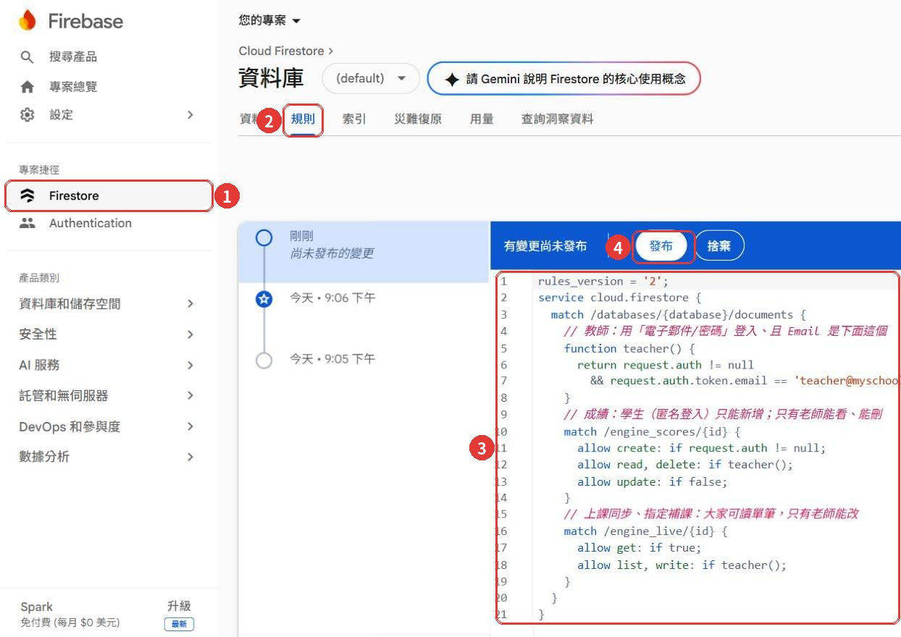
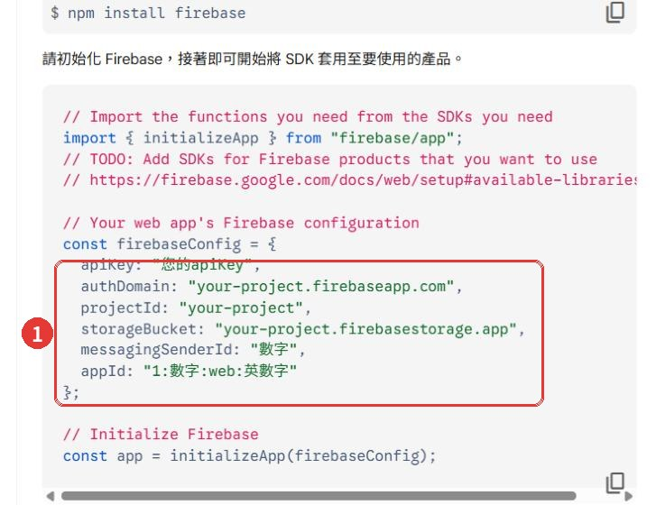
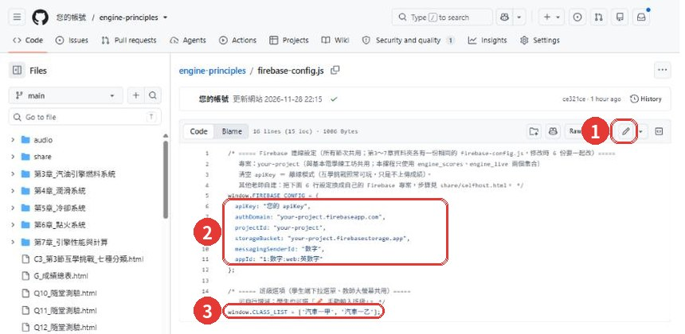
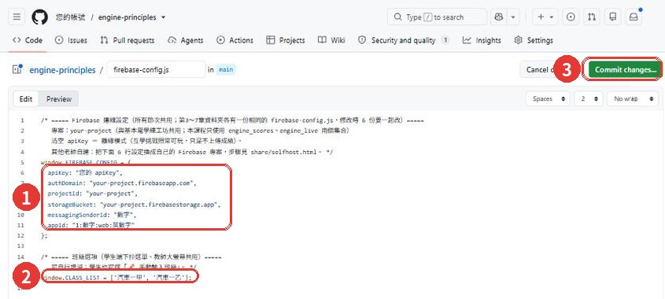

← 回開發歷程分享頁課程網站
給研習老師｜教師自建版
把引擎原理網站複製成「自己的」
直接用我的網址，動畫、簡報、補課包都可以自由使用。但互學挑戰成績、站內測驗、成績總表會存進我的資料庫，您看不到，也會用掉我的免費額度。想讓學生計分、自己看成績，請照這頁做一份自己的網站，大約 30～40 分鐘，全部免費。
需要準備：一個 Google 帳號（給 Firebase 用）、一個 GitHub 帳號（免費註冊：github.com）。
完成後：您會有自己的網址 https://您的帳號.github.io/engine-principles/，學生成績存在您自己的 Firebase，只有您能看。
1 圖中紅框和紅色數字＝要點的地方、照順序做。圖片可以點開放大。
步驟一：複製網站到您的 GitHub
- 用您自己的 GitHub 帳號登入（還沒有帳號就先到 github.com/signup 免費註冊），再打開 github.com/ntccar01/engine-principles。
- 按右上角 Fork → 直接按 Create fork。現在您的帳號底下就有一份一樣的網站。

① 在我的網站頁面右上角按 Fork。接著出現「Create a new fork」頁面，Owner 選您的帳號，直接按綠色的 Create fork。
- 在您那份（網址是
github.com/您的帳號/engine-principles）按 Settings → 左側 Pages。
- 「Source」選 Deploy from a branch，Branch 選 main、資料夾 /(root)，按 Save。
- 等 1～3 分鐘，重新整理 Pages 頁面，上方會出現您的網站網址。先打開確認看得到首頁。

① Settings → ② 左側 Pages → ③ Source 選 Deploy from a branch → ④ Branch 選 main、資料夾 /(root)，按 Save → ⑤ 幾分鐘後上方出現「Your site is live at …」就是您的網址。
⚠ 這時候網站裡的 Firebase 設定還是我的。在完成步驟三之前，請先不要讓學生送成績。
步驟二：建立您自己的 Firebase 專案
- 到 console.firebase.google.com，按「建立新的 Firebase 專案」，輸入名稱（例如
engine-我的學校）。Google Analytics、Gemini 可以都不開，按「建立專案」。
① 登入 Firebase 後，按「建立新的 Firebase 專案」。
① 輸入專案名稱（例如 engine-我的學校）→ ② 按「繼續」，後面幾頁照預設按繼續／建立專案即可。
- Authentication（驗證）→「開始使用」→「登入方法」，啟用兩種：
- 匿名（學生作答用，不用帳號）
- 電子郵件/密碼（老師登入成績總表、教師大螢幕用）

① 左側 Authentication → ② 上方「登入方式」→ 按「新增供應商」分別加入「電子郵件/密碼」和「匿名」→ ③ 兩個都顯示「已啟用」就完成。
- Authentication →「使用者」→「新增使用者」：輸入您的 Email 和一組密碼。這就是您的教師帳號，請記下來。

① 上方「使用者」→ ② 新增使用者 → ③ 輸入您的 Email → ④ 自訂一組密碼 → ⑤ 按「新增使用者」。
- Firestore Database →「建立資料庫」→ 版本選 Standard → 位置選 asia-east1 (Taiwan)（建立後不能改）→ 選「以正式版模式啟動」→「建立」。
- 進 Firestore 的「規則」分頁，把裡面全部刪掉，貼上下面這段，把
你的Email@example.com 改成步驟 3 的 Email，按「發布」。
① 左側 Firestore → ② 上方「規則」→ ③ 把編輯區全部刪掉，貼上下面的規則（Email 改成您的）→ ④ 按「發布」。
rules_version = '2';
service cloud.firestore {
match /databases/{database}/documents {
// 教師：用「電子郵件/密碼」登入、且 Email 是下面這個
function teacher() {
return request.auth != null
&& request.auth.token.email == '你的Email@example.com';
}
// 成績：學生（匿名登入）只能新增；只有老師能看、能刪
match /engine_scores/{id} {
allow create: if request.auth != null;
allow read, delete: if teacher();
allow update: if false;
}
// 上課同步、指定補課：大家可讀單筆，只有老師能改
match /engine_live/{id} {
allow get: if true;
allow list, write: if teacher();
}
}
}
- 左上齒輪 →「專案設定」→ 往下到「您的應用程式」→ 按 </>（網頁）→ 取個暱稱 →「註冊應用程式」。畫面會出現一段
firebaseConfig = { apiKey: … }，先留著這個畫面。
① 畫面上 firebaseConfig 大括號裡的這 6 行（apiKey 到 appId），等一下要貼到網站裡。圖中的值已遮掉，您的畫面會是一串英數字。
步驟三：把網站換成您的 Firebase
網站裡有 6 個 firebase-config.js，內容一樣，都要改：
| 位置（在您 GitHub 那份網站裡） |
|---|
firebase-config.js（最外層，第 1、2 章用） |
第3章_汽油引擎燃料系統/firebase-config.js |
第4章_潤滑系統/firebase-config.js |
第5章_冷卻系統/firebase-config.js |
第6章_點火系統/firebase-config.js |
第7章_引擎性能與計算/firebase-config.js |
- 在 GitHub 點開檔案 → 右上 鉛筆圖示（Edit）。
- 把
apiKey 到 appId 這 6 行，換成步驟二第 6 點畫面上的值（大括號裡那 6 行）。
- 把最後一行的班級改成您的班級，例如：
window.CLASS_LIST = ['機械一甲', '機械一乙'];
- 按右上 Commit changes… → Commit changes。其他 5 個檔照做（可以直接整份複製貼上）。

打開 firebase-config.js：① 按右上鉛筆圖示（Edit）進入編輯。② 是要換掉的 6 行，③ 是班級清單。
編輯畫面：① 換成您 Firebase 的 6 行 → ② 改成您的班級 → ③ 按右上綠色 Commit changes…，跳出視窗再按一次 Commit changes。
改好之後的樣子（數值換成您的）：
window.FIREBASE_CONFIG = {
apiKey: "您的 apiKey",
authDomain: "您的專案.firebaseapp.com",
projectId: "您的專案",
storageBucket: "您的專案.firebasestorage.app",
messagingSenderId: "數字",
appId: "1:數字:web:英數字"
};
window.CLASS_LIST = ['機械一甲', '機械一乙'];
步驟四：試一次
- 等 1～3 分鐘讓 GitHub 更新，打開您的網站（按 Ctrl＋F5 強制重新整理）。
- 開任一節的「隨堂測驗」，班級選 🧪 教師測試，作答送出。
- 打開首頁頁尾的「教師專區」→「成績總表」，Email 欄位換成您的 Email（預設是我的），輸入密碼登入，班級選「教師測試」，看得到剛才那筆就成功了。
- 測完可在成績總表按「🗑 清除教師測試資料」。
常見問題
Q：不自建，直接用您的網址可以嗎？
可以看動畫、簡報、補課包、學習單、教案，完全沒問題。只是請不要讓學生在我的網址送成績：您看不到，還會混進我的班級資料、用掉我的免費額度。
Q：會花錢嗎？
不會。GitHub Pages 免費；Firebase 用免費的 Spark 方案，不必綁信用卡，每天約 5 萬次讀取、2 萬次寫入，一般班級用不完。超過也不會收費，只是當天計分暫停、隔天恢復。
Q：登入成績總表顯示「權限不足」？
檢查三件事：① 規則裡的 Email 跟您登入的 Email 一字不差；② Authentication 已啟用「電子郵件/密碼」；③ 規則已按「發布」（生效約需 1 分鐘）。
Q：學生登入時要輸入「班級通行碼」嗎？
不用。通行碼只在作者自己的 Firebase 啟用；您換成自己的 firebase-config.js 後，登入畫面不會出現通行碼欄位。若您也想用，可在規則的 hasOnly([...]) 加入 'k'，並加一行 && request.resource.data.k == '您的碼'，再把 student.js、score.js 裡的 classtool1141019 改成您的專案 ID。
Q：我之後更新網站，您的新版本怎麼拿？
在您 GitHub 那份網站上方按 Sync fork 可以取得我的更新。⚠ 同步後請檢查 6 個 firebase-config.js 是不是還是您的設定；如果被換回我的，再改一次。
Q：網站裡還有哪些是作者的連結？
各章的 links.js 裡有 YouTube 補課影片、剛好學、Edcafe 等網址。影片可以直接沿用；剛好學、Edcafe 這類需要老師帳號的活動，請換成您自己開的連結（不換的話按鈕會連到我的活動）。
有問題歡迎聯繫：林慶泓 老師（國立臺東專科學校附設高職部 汽車科）